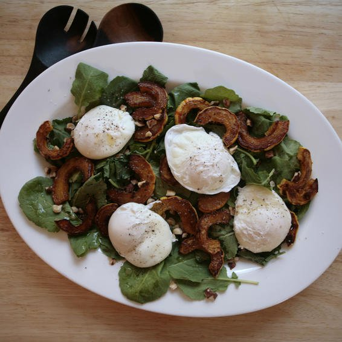

Easy Egg Recipe

Roasted Squash Salad With Hazelnuts And Poached Eggs
Prep time
20mins
cook time
20 mins
Total time
40 mins
SERVES: 4
Ingredients
1 delicata squash, seeded and thinly sliced
4 oz mixed greens
1/3 c bottled vinaigrette
4 lg eggs
4 Tbsp hazelnuts, chopped and toasted
Directions:
PREHEAT oven to 425°F. LINE a rimmed sheet pan with foil and drizzle with 2 Tbsp olive oil. PLACE squash in a single layer, sprinkle with salt and pepper, toss to combine, and roast until browned and tender, about 25 minutes, flipping squash midway through.
TOSS greens with vinaigrette, and divide between 2 plates or place on a platter. BRING a large skillet with 1½ inches of water to a bare simmer over medium-high heat. Working quickly, crack eggs onto a saucer, one at a time, and slide into barely simmering water. Cook about 4 minutes, until white is opaque. Remove with a slotted spoon, pat dry with a paper towel, and place on greens. SPRINKLE each egg with salt and pepper, and top salads with 2 Tbsp each hazelnuts.
Serve Hot. Enjoy!
NUTRITION
(per serving) 180 cal, 8 g pro, 7 g carb, 2 g fiber, 3 g sugars, 14.5 g fat, 3 g sat fat, 394 mg sodium